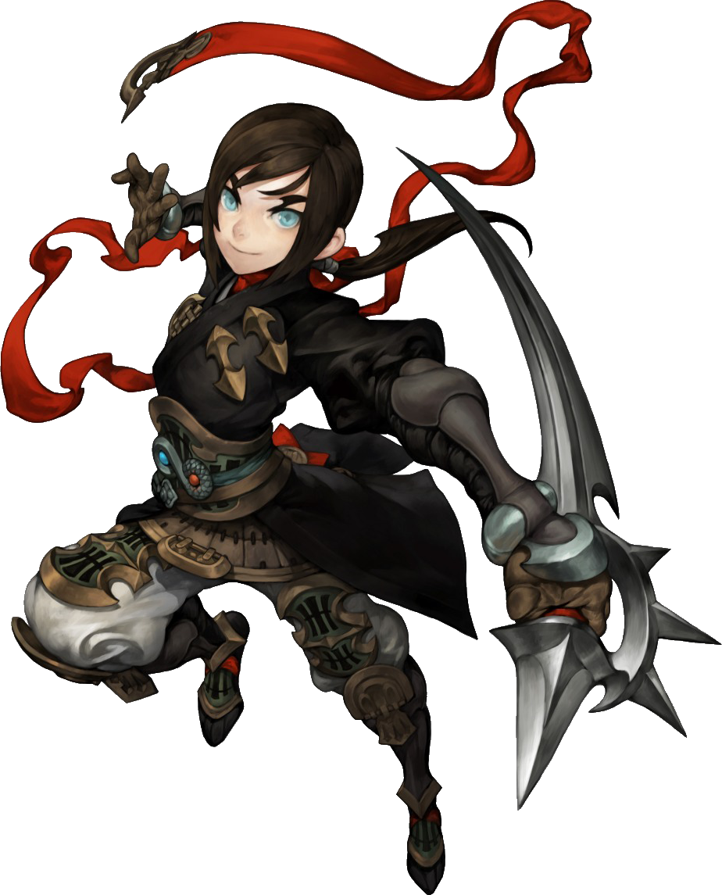
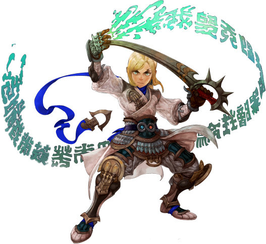
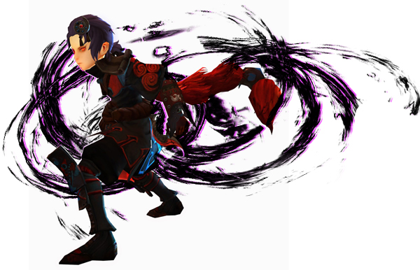

Assassin
Karakter yang memiliki serangan dengan jarak middle range, karakter ini menggunakan scimitar dan dagger sebagai senjatanya. Pada level 15 player dapat memilih 2 pilihan yaitu Bringer dan Chaser dan pada level 45 dapat memilih LightFury dan AbyssWalker untuk Bringer sedangkan untuk Chaser adalah Raven dan Ripper. Dan ada 1 clas special, yaitu : Bleed Phantom.
- Bringer
- LightFury
- AbyssWalker
- Chaser
- Raven
- Ripper
- Bleed Phantom

class yang memiliki dua serangan elemental yakni light dan juga dark, class ini juga dapat dikatakan sebagai class support karena class ini memiliki buff(kekuatan) dan dapat menyembuhkan HP teman satu team selain itu class ini juga dapat men summon seorang prajutit ninja dan kucing ninja.

Class ini mengandalkan skill dengan element light dan dapat digunakan sebagai class support karena memiliki skill heal yang bernama Chakra of Miracle yaitu Heal HP teman satu team.

Class ini mengandalkan skill dark, memiliki skill yang dapat menambah dark attack teman satu team skill tersebut bernama Incarnation of dark.

class dengan serangan type serangan middle range class ini memiliki dua element attack yakni fire dan dark attack, class ini juga berperan sebagai class DPS di dalam party karena memiliki damage yang over.

Class ini mengandalkan serangan dengan elemen dark, class ini adalah class paling berdamage dibandingkan class class lain dan memiliki skill yang bernama Crooking Deadfall skill yang menyedot lawan lalu meledakkannya.

Class ini mengandalkan serangan dengan elemen fire, class ini adalah class memiliki damage yang tidak telalu besar dibanding saudaranya Raven, namun memiliki combo yang sangat mematikan selain itu class ini juga memiliki skill yang bernama Artfull Chaser skill yang memukul lawannya secara bertubi tubi.

Lanjutan special class dari assassin yang memiliki damage kegelapan yang besar. Kekuatannya dapat menghancurkan naga dalam sekali tebasan pedang.
 Facebook :
Facebook :  IG :
IG :